01 System Workflow
Every CCTV clip flows through one detector, then splits into two parallel streams. Blue is the person stream — EfficientTAM mask propagation keeps worker identity through occlusion, and a pose model attaches 17 keypoints to each track. Violet is the cow stream — ByteTrack is enough here, because cow features are aggregate (positions and proximity, not identity). The streams merge into per-track feature sequences that a Transformer with MIL attention pooling turns into a clip-level verdict.
The same pipeline on a real clip
The strip below is one real frame from an aggression-labeled clip, at every stage of
the pipeline — produced by a stage-wise debug notebook that runs the exact same
functions as the production pipeline. A worker (yellow hoodie) is next to a cow at the
holding-area gate; the clip is labeled aggression_type = "tail".
sampled at 10 FPS
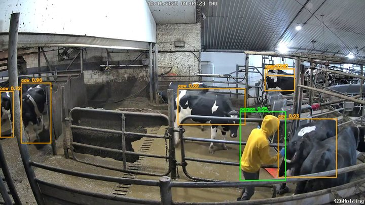
person 0.95 · cows 0.72–0.96
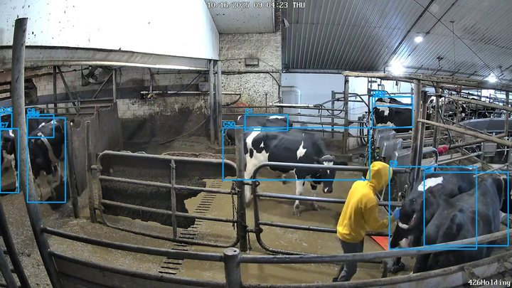
ByteTrack IDs (C1, C50, …)
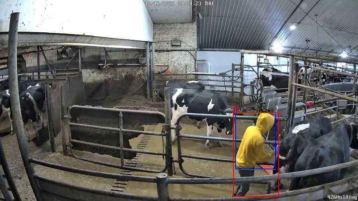
EfficientTAM mask propagation
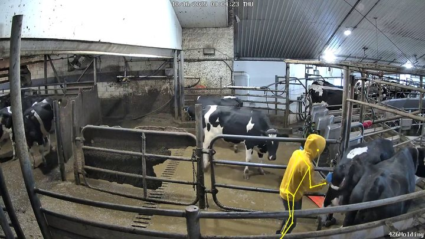
17 COCO keypoints
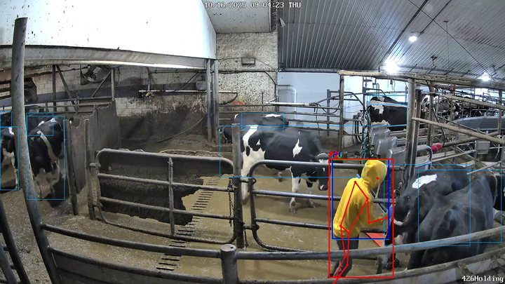
→ per-clip
.pkl → features → MILAll six panels are real pipeline output on a real clip (stage-wise helper notebook). Faces are not identifiable in the footage; camera names are the farm's internal pseudonyms.
Watch it run
The stage animation below cycles that same frame through all six pipeline stages; the three clips next to it play the pipeline's combined output — cow boxes, person track, and skeleton — across frames sampled from each clip: two aggression-labeled clips and one normal clip for contrast.
Downstream of the strip, every clip becomes a .pkl of person tracks (bboxes +
keypoints) and cow tracks (bboxes). Feature engineering turns each person track into an
(T × 87) sequence — kinematics (28), joint angles (9), posture (12),
human–cow interaction (16), movement direction (6), asymmetry (6), temporal
dynamics (6), confidence/validity (4). A Transformer encoder embeds each track, an attention
pool aggregates all tracks in the clip into one embedding, and a classifier head emits the
clip-level aggression verdict.
02 Engineering Report — Four Phases, Rebuilt Where It Broke
The pipeline has four phases — detection training, tracking + pose, feature engineering, temporal classification — and three of the four had to be fundamentally rebuilt after their first version met real data. Every rebuild below is documented in the project's version-history notes, and every number comes from a real run.
Phase 1 — Detection: train the detector you can actually resume
A YOLO26l cow/person detector was fine-tuned on 41,532 CCTV images (1.11M cow instances, 45K person instances) at 960px for 120 epochs. The first prototype used a flat random split — frames from the same video landed in both train and val, inflating metrics — so the production run switched to video-level splits: every frame of any one video goes to exactly one split. Three architectures were trained and compared on the same data before committing:
| Model | Recipe | mAP@0.5 | mAP@0.5:0.95 | Verdict |
|---|---|---|---|---|
| YOLO26l @ 960px | 120 epochs, mosaic + mixup + copy-paste | 0.783 | 0.591 | Shipped |
| YOLO26l progressive resizing | 640→960→1280px, 3 phases | 0.756 | 0.532 | Resolution jumps destabilized training |
| RT-DETRv2-l @ 960px | Transformer detector, NMS-free | trained for comparison | Not adopted | |
The honest number behind the headline: per-frame cow recall is only 63% — cows in a packed holding area occlude each other constantly. The design answer was to stop chasing per-frame recall and let tracking compensate: ByteTrack's Kalman prediction fills detection gaps, lifting effective cow coverage to ~95% at track level (~99% for persons, from 80% per-frame).
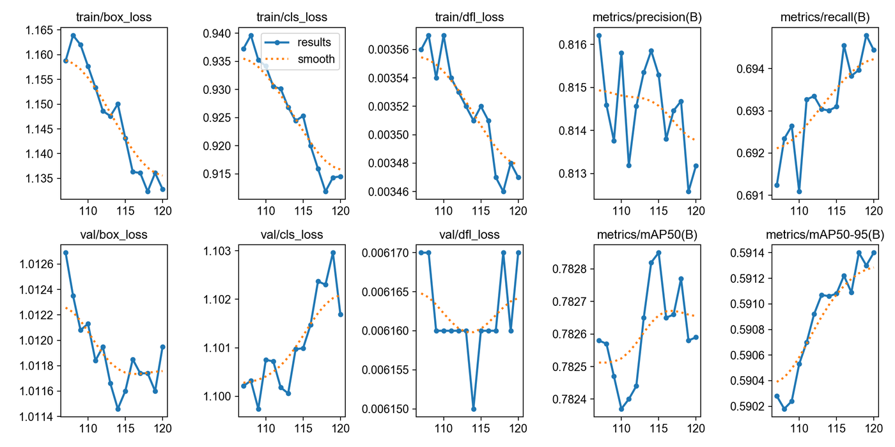
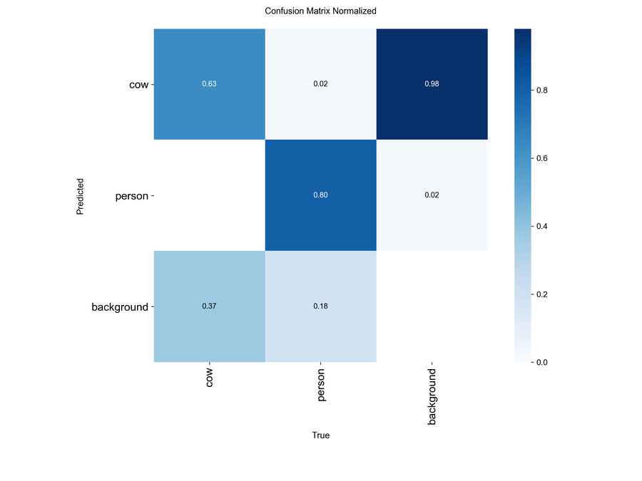
Phase 2 — Tracking: ByteTrack fragmented, TAM held
Tracking is where the project nearly stalled. Stock ByteTrack shattered person tracks on every brief occlusion: median track continuity 0.14, and downstream, a median 64% of feature values were NaN per clip — only 107 of 877 clips survived the training filter. Six data-hygiene fixes (longer minimum track lengths, stricter pose-to-track IoU, label typo cleaning, a phantom-clip skip branch) collapsed the outliers but left the median NaN ratio unchanged, because the audit showed the root cause was ByteTrack-internal:
Version 3 replaced ByteTrack with EfficientTAM (a distilled SAM2) for person tracks only: mask propagation with a memory bank maintains identity straight through occlusion and motion blur. Cows deliberately stayed on ByteTrack — cow features are aggregate, so cow ID stability matters less, and running TAM on ~130 cow objects per clip would waste VRAM. Each clip is loaded fully into RAM (1.3 GB worst case) and propagated in a single pass, because chunking would re-introduce fragmentation at chunk boundaries; new persons are seeded from YOLO boxes every 30 frames plus transient per-5-frame sweeps.
Phase 3 — Features: stop picking a "primary person"
The first feature-engineering version selected one "primary" person per clip (the longest track) and extracted an 87-dimensional feature sequence for them — and if the picker chose a bystander, or the primary's track was fragmented, the labeled aggression sat in a discarded track and the clip's features were mostly NaN. 86.9% of clips were being dropped. The v2 rewrite made every viable track a first-class sample: the real production run processed 906 clips into 7,095 person tracks (mean 7.8 per clip), each with its own (T × 87) tensor, its own NaN-ratio filter, and video-grouped train/val/test splits so no video leaks across splits.
Phase 4 — Classification: from max-pool heuristic to multi-instance learning
With per-track samples, the label question becomes: what is a track's label when only the clip is labeled? Version 2 propagated the clip label to every track — bystanders in aggressive clips train as aggressive (accepted label noise) — and max-pooled track predictions at inference. Version 3 answered it properly with multi-instance learning (attention pooling, Ilse et al. 2018): the clip is a bag of tracks, a small MLP scores each track, softmax attention pools track embeddings into a clip embedding, and BCE loss only ever sees the clip-level prediction. The model is free to score bystanders low without penalty. Both were trained on identical data with pinned seeds — a true A/B:
| Model (test set, 56 clips) | Accuracy | Macro F1 | F1 aggression | Recall aggr. | Pipeline accuracy* |
|---|---|---|---|---|---|
| v2 per-track + max-pool (run 1) | 0.857 | 0.757 | 0.913 | 0.913 | 0.901 |
| v2 stronger regularization (run 2) | 0.857 | 0.788 | 0.909 | 0.870 | 0.901 |
| v3 MIL attention pooling | 0.893 | 0.817 | 0.935 | 0.935 | 0.926 |
*Pipeline accuracy counts clips the tracker skipped as no-person (all genuinely normal) —
the number the deployed system would produce. All values from the runs' eval_results.json.
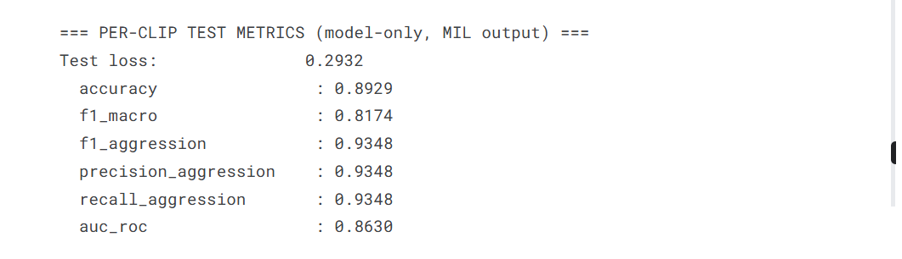
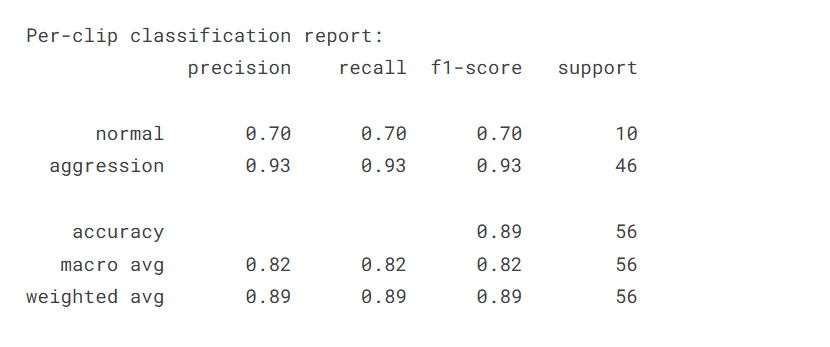
training_history.json. v2 peaks slightly higher on val, but v3 MIL generalizes better where it counts: on test, MIL wins every clip-level metric (0.817 vs 0.757 macro-F1). Early stopping picked epoch 8 (v2) and epoch 7 (v3).03 Problems I Faced
1 · Track fragmentation destroyed 88% of the training data
PROBLEM — ByteTrack split one physical person into multiple track IDs whenever a 1–3 second occlusion, motion blur, or partial exit killed the track. The feature stage then picked the longest fragment — and the labeled aggression event often sat in a discarded fragment, leaving the surviving feature vector mostly NaN. Measured: median track continuity 0.14, median feature-NaN ratio 0.64, and only 107 of 877 clips surviving the training filter — a 25× drop from target.
SOLUTION — Attack the root cause, not the thresholds. An audit showed 44% of multi-track clips had the "same person, ID reset mid-clip" signature — no ByteTrack parameter could fix that. Switched person tracking to EfficientTAM mask propagation, whose memory bank carries identity through occlusion, and processed each clip in a single whole-clip pass so chunk boundaries couldn't re-fragment tracks. Combined with per-track feature extraction, the surviving dataset went from 107 clips to 7,095 tracks across 906 clips.
2 · Free GPUs, hostile constraints: 12-hour ceilings and no bfloat16
PROBLEM — The compute budget was interruptible SaladCloud nodes and Kaggle sessions (12-hour hard ceiling, P100/T4 GPUs). EfficientTAM's source has hard-coded bfloat16 casts — pre-Ampere GPUs have no bf16 kernels and crash mid-propagation. And a full tracking run needs ~1,400 clips at 80–150 clips per session.
SOLUTION — Resume infrastructure everywhere: detector training auto-saves every epoch and resumes from cloud-storage checkpoints (a background sync every 3 minutes survives node kills); the tracking notebook packages finished clips into a resume bundle that the next Kaggle session mounts as a dataset — the full run completed across 10–18 sessions. For the GPU mismatch, four monkey-patches convert every bf16 cast into a no-op on pre-Ampere GPUs only (fp32 throughout), leaving A100 behavior untouched.
3 · Suspected memory leak — disproved with instrumentation, fixed with a cap
PROBLEM — Long tracking sessions died with out-of-memory errors, looking exactly like a cumulative leak: RAM climbing clip after clip until the session was killed.
SOLUTION — Instrument before fixing: per-clip psutil RAM logging showed drift under 0.2 GB/clip on average — no leak. The real cause was per-clip intrinsic peaks: two clips in the dataset are 1,408s and 1,361s long — ~14,000 frames at whole-clip TAM load exceeds Kaggle's 16 GB RAM on their own. A SKIP_DURATION_ABOVE_SEC = 600 cap dropped exactly those two clips: 0.07% of the dataset traded for run stability, and the skip writes no output so it's reversible if the cap is ever raised.
4 · TAM's fix created a new bug: duplicate IDs for the same person
PROBLEM — With fragmentation gone, mean persons-per-clip read 8.8 — on a farm where most clips have one or two workers. A measured audit over 80 clips: 60% of within-clip track pairs overlapped at IoU > 0.5, and 24% were virtually identical (IoU > 0.9). Root cause: when partial occlusion shrinks a TAM mask, a fresh YOLO box for the same person fails the seed-dedup IoU check → a duplicate ID is seeded for a person already being tracked.
SOLUTION — A stage-wise visual helper confirmed the duplicates are self-duplicates of one person (see figure), not mislabeled bystanders — so under max-pool/attention aggregation they're benign for correctness, and video-grouped splits keep duplicates out of train/test leakage. Rather than a 3-day tracking re-run, the cheap mitigations shipped first: per-clip loss weighting (each clip contributes equal total loss regardless of track count) plus pos_weight to counter the 68%-positive skew duplicates induce. A union-find IoU-merge dedup pass is designed and held in reserve — measured, documented, not yet needed.
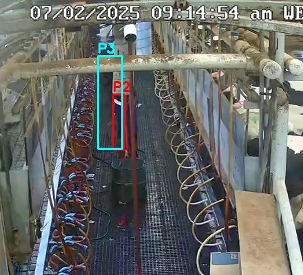
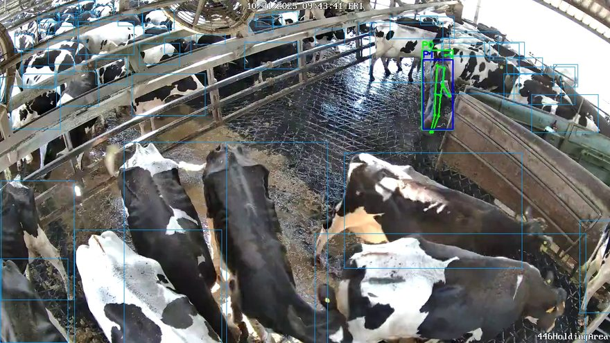
5 · The split was balanced by count — and 84% positive by label
PROBLEM — Train/val/test splits were video-grouped (correct, prevents leakage) and count-balanced — but nobody told the label distribution: the validation split came out 84% aggressive and the test split 49%, making validation F1 meaningless as an early-stopping signal.
SOLUTION — Label-stratified group splitting: still video-grouped, but stratified on clip labels, bringing every split to ≈61% positive — matching the processed population. Early stopping on val macro-F1 became trustworthy, and the v2-vs-v3 A/B comparison inherited comparable splits.
6 · Bystanders trained as aggressors — label noise by construction
PROBLEM — Per-track training needs per-track labels, but only clip labels exist. Propagating the clip label means a calm bystander in an aggressive clip trains as label=1 — systematic label noise on exactly the positive class, and with duplicate tracks it multiplies.
SOLUTION — Multi-instance learning: the clip is a bag of its tracks, attention pooling aggregates track embeddings, and loss touches only the clip-level output — the model can score bystanders near zero without being penalized. On the held-out test set MIL beat tuned max-pool on every clip-level metric (macro-F1 0.817 vs 0.788, aggression recall 0.935 vs 0.870) and its attention weights double as a diagnostic: they show which track the model blamed, a step toward the aggressor-identification milestone.
04 Training Infrastructure — Interruptible GPUs, Resumable Everything
There was no dedicated GPU box on this project — every heavy job ran on hardware that could disappear mid-epoch. That constraint shaped the engineering as much as the models did:
- Dockerized detector training on interruptible cloud GPUs — RTX 4090/3090 nodes at $0.09–0.16/hr. The training container resumes from the latest checkpoint automatically when a node is reclaimed; configuration comes in via environment variables (no secrets in code or image).
- Cloud checkpoint store (Cloudflare R2, S3-compatible) — a background sync pushes weights and logs every 3 minutes, so the most a node kill can cost is minutes, not hours. Free-tier storage; boto3 client.
- Kaggle multi-session orchestration — the tracking phase processes ~1,400 clips at 80–150 per 12-hour session. Finished clips ship as a resume bundle (zip → Kaggle dataset → mounted next session); a backend-mismatch assertion refuses to mix ByteTrack-era outputs into a TAM run.
- A 50-clip quality gate — after the first 50 clips of any tracking run: median persons ≤ 4, track continuity ≥ 0.40, wall-clock ≤ 15s/clip. Fail any → stop and switch tracker backend instead of burning 11 more hours on a failing configuration. Three TAM-family backends (EfficientTAM / SAMURAI / SAM 2.1) ship in the same notebook, switchable by uncommenting one block.
- Version discipline — every significant logic change gets a new notebook file; originals stay byte-identical. The repo carries a VERSION_HISTORY of what changed and why, and a FUTURE_MODIFICATIONS decision tree of pre-planned responses ("if the TAM bundle still fragments → SAMURAI; if long clips OOM → tiered FPS") so mid-run surprises had answers written down before they happened.
05 What I'd Build Next
These are the project's actual next milestones and the pre-planned escalations from its decision-tree docs:
- Multi-class aggression typing (Milestone 2) — the metadata already carries a 5-class mapping (hard object / belt / tail / kicking / normal); the MIL head swaps sigmoid for softmax with weighted CE for the imbalanced classes.
- Two-stream fusion — concatenate DINOv2/CLIP visual embeddings of person crops with the skeleton features, then cross-attention fusion: posture says "arm raised," pixels say "holding a stick."
- Aggressor identification head — MIL attention weights already point at the suspicious track; a supervised head on top would name the aggressor, not just the clip.
- Cross-track attention — let each track's encoder attend to other tracks in the same clip before pooling, capturing person-person interaction the current bag model ignores.
- Deployment milestone (M3) — ONNX/TensorRT export, skip-frame inference, cross-farm domain evaluation, and an alert dashboard with human-in-the-loop review of flagged clips.